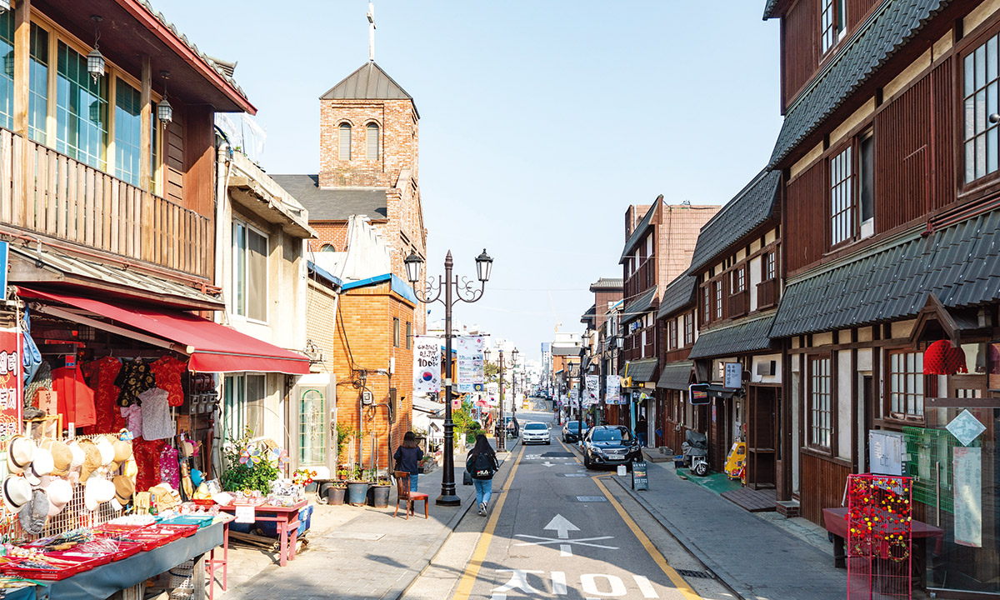
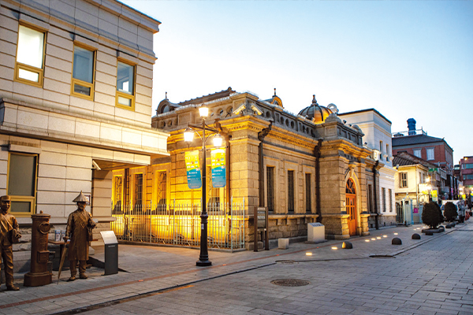
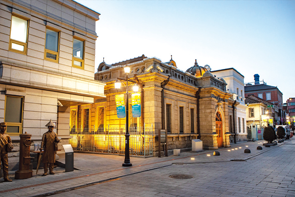
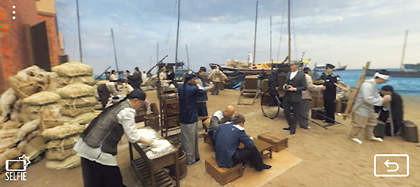
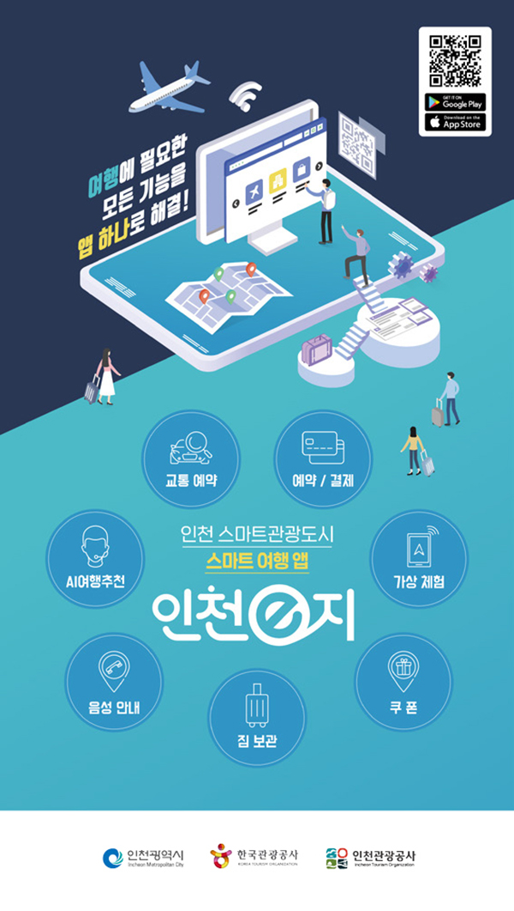
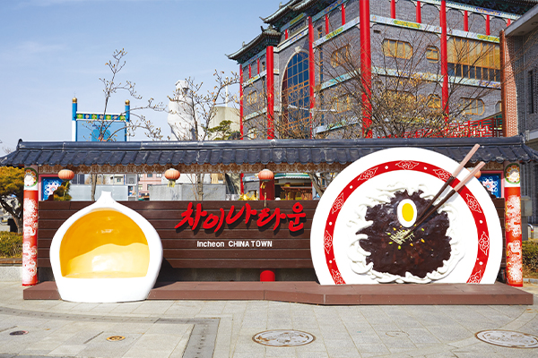
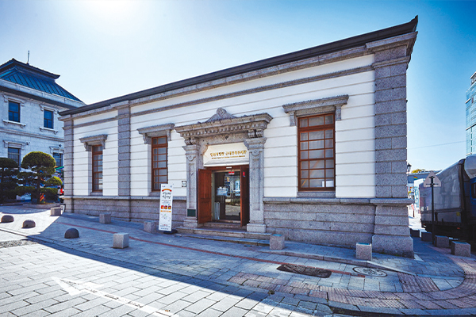

Incheon open port
근대 역사와 문화예술이
4차 산업혁명 기술을 만나다
‘앱’ 하나로 통하는
스마트관광도시 ‘인천 개항장’
개항(開港), 특정 항구를 열어 외국 선박의 출입이 허용된 항만. 쇄국정책으로 일관하던 조선이 열강들의 거센 통상 압박에 굴복해 문을 연 것으로 이해하는 용어이기도 하다. 하지만 한국민족문화대백과사전은 “조선 개항은 근대 일본의 무력 교섭(강화도조약)이라는 외래적 계기와 더불어 민족사회 내에 자라고 있던 대외 개방의 내재적 계기가 작용해 이뤄진 것”이라고 평가하며, 쇄국 지양과 개방의식의 철학적 뿌리를 실학사상과 연결하고 있다. 개항으로 서해안 작은 포구 ‘제물포’는 하루아침에 세계적 항구가 됐고, 21세기 지금은 근대 역사와 문화예술이 4차 산업혁명 기술과 융합되는 ‘스마트 관광도시’의 선봉장 역할을 톡톡히 하고 있다.
글 편집실 사진 인천관광공사·인천시청·인천중구청·고인순

 

제물포구락부에서 체험할 수 있는 시간여행
가마니를 둘러업은 중국인 인부들이 부리나케 오가고, 일부는 거리에 앉아 수타로 뽑은 면을 숭늉 마시듯 허겁지겁 들이켠 후 바삐 돌아간다. 너무 맛나게 먹는 모습에 조선인들과 일본인들마저 호기심 가득 힐끔거린다. 건너편 중화요리 집 ‘공화춘’ 입구 앞에선 중국인 주인장(우희광)이 무역상들을 상대로 호객행위를 하고 있다. 부두에 막 도착한 외국인들은 조선인 짐꾼들을 찾아 ‘대불호텔’에 가자며 짐삯을 흥정하고, 한쪽에선 먹거리 장수, 가판대에 물건을 놓고 파는 사람, 시비가 붙어 말다툼하는 사람 등 온갖 부류의 사람들과 물건 등으로 인해 부둣가는 그야말로 야단법석의 도떼기시장과 다름없다.
- 19세기 말, 개항장 제물포의 풍경

‘VR리얼타임 드라마’의 화면 영상
원조 짜장면 먹는 제물포 현장으로 시간여행
제물포 인근 주민들의 삶의 터전이었던 ‘칠통마당’(현 인천내항 1·8부두)은 각지에서 실어 오는 볏섬을 받아 올리는 선창이었고, 1883년 개항 이후에는 벼와 더불어 주요 화물들과 외국인들이 넘쳐나는 물류 중심지였다. 한국인이 즐겨 먹는 짜장면의 원조는 바로 이곳에서 탄생했다. 부둣가에서 일하는 인부들(쿨리/苦力)은 청나라 출신이 많았는데, 밀가루를 실은 손수레에서 수타면을 뽑아 삶은 뒤 춘장을 얹어 이들에게 팔았던 것이 짜장면의 원조다. 칠통마당에서 직선거리 3백미터 남짓에 있는 ‘공화춘’은 최초로 짜장면이라는 상표를 달고 판매한 곳으로 알려져 있다.
1908년 무렵 세워진 것으로 추정되는 공화춘은 인천시 중구가 매입함으로써 2012년부터 짜장면박물관(등록문화재 제246호)으로 변신했는데, 내부에는 1930년대 공화춘 접객실, 60년대 주방을 재현한 전시실 등이 있어 짜장면의 탄생과 변천사를 한눈에 파악할 수 있다. 특히 전시실 내부에서 ‘인천e지’ 앱을 이용해 ‘리얼타임 드라마’를 구동하면 앞서 묘사한 제물포의 모습을 VR(가상현실)로 생생하게 체험할 수 있다. 박물관 내에 설치된 QR코드를 통해서도 앱을 설치할 수 있고, 셀피(Selfie) 모드로 전환하면 시간여행을 간 듯 당시 왁자지껄한 풍경을 배경으로 셀프 사진을 찍을 수도 있다.
제물포구락부, 이권 다툼의 장에서 복합문화공간으로
현재 서 있는 위치에서 실제 일어난 과거 한 장면 속으로 이동하는 시간여행인 ‘VR 리얼타임 드라마’는 독일, 영국, 러시아 등 각국 열강에서 온 외국인들을 위한 사교의 장이자 이권 다툼이 치열하게 펼쳐졌던 ‘제물포구락부’에서도 체험할 수 있다.
러시아 건축가인 ‘세레딘사바틴’에 의해 1901년 세워진 제물포구락부는 개항장에 세워진 서구 건축물 중에 유일하게 남은 유산으로 우리 근대사의 영욕을 고스란히 담고 있는 대표 문화재(시 유형문화재 17호)다. 배우 공유가 주연한 드라마인 <도깨비> 촬영지로 더욱 유명해진 이곳에선 학생들을 위한 프로그램을 비롯해 전시·공연, 강좌 등 다양한 이벤트와 사업들이 꾸준히 진행되며 ‘지역 상생 플랫폼’으로 자리 잡아가고 있다.
제물포구락부 입구에는 현장에서 바로 콘텐츠를 체험할 수 있는 기기가 설치되어 있는데, 이 시계 형태의 기기를 통해 인천e지 AR/VR 앱이 아닌 현장에서 ‘VR 리얼타임 드라마’ 콘텐츠를 편리하게 체험할 수 있다. 인천 개항장 역사와 연계한 다양한 프로그램 운영을 통해 골목, 동네, 마을의 문화적 도시재생을 위한 인천시 문화재 활용정책 제1호 공간으로 재탄생한 제물포구락부 현장에서는 복합문화공간으로 존재하는 현재의 모습과 사교 공간이었던 과거의 모습을 앱을 통해 동시에 즐길 수 있다. ‘우리나라 자주적 개항의 상징적 서사 공간’을 표방하고 있는 제물포구락부는 현재 문화재청으로부터 문화재형 예비사회적기업으로 선정된 ‘카툰캠퍼스’에 의해 위탁 운영되고 있으며, 지난해에는 국토·도시 및 경관 디자인·창의적인 행정 우수사례 등을 발굴·평가하는 ‘2021 대한민국 국토대전’에 참가해 국무총리상을 수상할 만큼 문화적 가치 재생을 통한 새로운 도시재생에 중요한 역할을 담당하고 있다.
개항장 스마트관광의 만능키 ‘인천e지’
개항장 일대 방문객들은 공공와이파이 및 모바일 앱 ‘인천e지’를 통해 다양한 스마트관광 요소를 갖춘 맞춤형 서비스를 제공받는다. 특히 ‘인천e지’와 연동되는 ‘인천e지AR’를 설치하면 각종 VR·AR 체험 서비스도 즐길 수 있다. 방문객들은 AI 기반의 ‘여행 추천’ 서비스와 함께 개개인의 취향·선호도에 따른 맞춤형 패스 및 지도 내 동선을 따라 개항장 일대를 둘러볼 수 있고, 총 12곳에서 AR도슨트, AR파노라마와 같은 체감형 콘텐츠를 즐길 수 있다.
AI여행 추천 외에도 먹거리부터 즐길 거리, 교통수단 등 다양한 정보들을 얻을 수 있다. 관광 안내를 해주는 ‘오디오가이드’, 맛집에서 줄 서는 수고를 더는 ‘스마트오더’, 시티투어버스, 개항장 투어 등 이동수단을 예약(호출)할 수 있는 ‘모빌리티’, 두 손 가볍게 여행할 수 있는 ‘짐보관 서비스’, 불편 사항을 실시간 다국어 문자채팅으로 해결하는 ‘1330문자채팅’, 중국 관광객을 겨냥한 ‘위챗 QR결제’ 등은 큰 호응을 얻고 있다.
무엇보다 인천e지에 카드를 등록해놓으면 터치 한 번으로 NFC 결제를 할 수 있고, 식당, 카페 등 할인쿠폰도 받을 수 있다. 오프라인 상권을 온라인으로 확장해 지역 상권 활성화 및 관광 경쟁력 증대에 기여하고 있는 인천e지 서비스는 관광객이 주로 찾는 차이나타운, 개항장뿐만 아니라 노포가 많은 홍예문로 및 신포로, 개항과 함께 형성된 ‘신포국제시장’, 뉴트로 여행지로 각광받는 ‘싸리재길(경동 일대)’ 등에서도 사용할 수 있다.
인천e지 앱은 현재 안드로이드(플레이스토어)의 앱스토어(iOS)에서 다운받을 수 있다.

스마트하고 흥미진진한 언택트 여행지로 급부상
앱 이용자들이 SNS, 블로그 등에 남긴 후기를 살펴보면, 초·중·고 학생부터 20~30대 청년층에 이르기까지 호평받은 대표 서비스로 AR, VR 체험이 압도적이었다. 기존의 성인층뿐만 아니라 아이를 동반한 가족 여행객들도 증가하는 추세다. 짜장면박물관과 제물포구락부의 VR 체험 외에 자유공원과 청일조계지 경계계단에서는 ‘파노라믹 AR(증강현실)’을 통해 과거 전경을 접할 수 있다. 자유공원 전망대에서 인천항 전경을 총 3개의 시대(1883, 1900, 1918년)로 각각 선택해 비교하며 개항장 인천이 어떻게 변모해왔는지 살펴볼 수 있다. 경계계단을 중심으로 한쪽엔 청국 조계지, 반대쪽엔 일본 조계지가 존재했던 극적인 개항장 당시 모습을 현 모습과 비교해 둘러볼 수 있는 ‘청일조계지 경계계단’은 개항장 방문객들의 필수 코스로 꼽힌다.
특히 곳곳에서 개항장과 관련된 역사 속 인물들을 만나 그들의 얘기를 들을 수 있는 ‘AR고스트’는 포켓몬GO와 같은 AR게임 만큼이나 젊은층의 호기심을 불러일으키며 큰 인기를 얻고 있다. AR고스트로 출현하는 첫 번째 인물로 조선 최초로 서양 근대식 호텔 ‘대불호텔(1884)’을 세운 호리 히사타로의 아들 ‘호리 리키타로’를 대불호텔 전시관 1층에 만날 수 있다. 그는 서울에 있던 손탁호텔(1902)보다 무려 10여 년 앞서 있다며 너스레를 떨며 호텔을 소개한다. 3층 무대에선 모던걸 싱어를 통해 그녀만이 간직한 이야기를 엿들을 수 있다.
중구청 인근 복합문화시설인 ‘누들플랫폼’에선 독립운동의 산증인 김구 선생으로부터 알려지지 않은 인천과의 인연을 들을 수 있다. 이외에 인천 출신의 여성독립운동가 김란사(근대건축전시관), 조선인보다 조선을 더 사랑한 헐버트(인천중구청), 개항장을 설계한 건축가 사바틴(조계지 계단), 인천 해관이 창설될 때 스카웃되어 온 청나라 사람인 ‘우리탕(한중원)’, 조선의 기독교 보급과 근대교육에 헌신한 아펜젤러(짜장면 조형물) 등을 만나볼 수 있다.

차이나타운 짜장면 조형물

근대건축전시관
포스트 코로나 시대 스마트관광의 선도모델로
문화체육관광부와 한국관광공사가 인천광역시, 인천관광공사와 공동으로 조성한 ‘2021 인천 스마트관광도시’는 총 70억 원의 예산으로 추진됐고, 지난해 7월 온라인 출범식을 통해 서비스를 본격 개시했다. 구글 플레이스토어에서 ‘인천e지’ 이용자 평점은 4.8점이고, 이와 연동돼 VR·AR를 즐길 수 있는 ‘인천e지AR’은 4.9점을 차지하고 있다.
이용자 규모(다운로드)에서 큰 차이가 있지만 국내 최고의 ‘Travel Super App’으로 평가받는 자유여행 플랫폼 ‘마이리얼트립’ 평점이 4.7이고 한국관광공사의 ‘대한민국 구석구석’이 4.0점인 것을 고려하면 지방공공기관이 주도해 만든 앱으로는 꽤 높은 수치다.
한국관광공사가 스마트관광도시 사업을 추진하는 이유 중 하나는 AR, VR 등의 스마트 기술을 활용한 창의적인 콘텐츠 개발로 각 관광지의 매력을 증대시킬 수 있다는 점이다. 특히 앱 기반 플랫폼을 매개로 지역 소상공인들을 비롯한 주민들이 적극적으로 동참함으로써 관광객들의 편의를 도모함은 물론 장기적으로 신규 고용 창출 등 지역관광 성장을 견인하며 빅데이터 구축·분석을 통한 스마트관광 마케팅의 토대도 마련할 수 있다.
인천관광공사는 인천 스마트관광도시 사업과 연계한 콘텐츠 및 다양한 상품 개발을 통해 인천e지 앱을 더욱 활성화하고, 더 많은 관광객이 개항장을 찾을 수 있도록 유도할 계획이다. 관광산업 트렌드 변화 속에서 인천은 1호 스마트관광도시로서 포스트 코로나 시대 관광 부흥을 위해 노력하는 각지 관광지들의 벤치마킹 대상이자 스마트관광 선도모델로서의 입지를 굳혀 나갈 것으로 기대된다.
자유공원 전망대에서 바라본 시대별 인천항 풍경
꺼지지 않는 개항의 밤 이야기
문화재청 우수사업 ‘인천개항장 문화재야행’
문화재청 우수사업으로 선정된 ‘인천개항장 문화재 야행’은 인천시 중구가 주최하고 인천관광공사가 주관하는 행사로 지난해 7월과 11월에 2회 개최됐다. 지난 행사에선 문화재 프로젝션 맵핑과 시민참여형 개항장 메이커스 공모전, 사회적약자를 배려한 무장애(배리어프리) 프로그램 등을 기획·운영해 호평받았다. 또, 세계축제협회 한국지부가 주관한 제15회 피너클어워드에서 방역 및 안전 프로그램 부문에서 은상을 수상했는데, 야간형 축제의 특성을 고려해 LED 방역뱃지 및 우산을 활용해 긍정적 평가를 얻었다.
‘문화재야행’은 밤이 되면 새로운 아름다움을 뿜어내는 지역의 문화유산과 주변의 문화시설을 연계해 다양한 역사문화체험의 기회를 제공하는 문화유산 매개 지역관광 활성화 프로그램이다. 인천개항장 문화재야행은 6년 연속 공모에 선정돼 올해에도 열리는데, 더욱 다양한 프로그램을 관람객들에게 선보일 예정이다.
개항장 문화지구 일원에서 열린 ‘인천개항장 문화재야행’
랜선으로 떠나는 개항장 시간여행 현장체험
인천관광공사는 스마트 여행 앱 ‘인천e지’를 통한 AR·VR 개항장 시간여행 현장학습 프로그램을 마련했다. 초·중·고등학생을 대상으로 하는 ‘인천e지 앱으로 떠나는 시간여행’은 체험활동, 교과과정 등과 연계한 스마트 현장학습으로 대면, 랜선으로 나눠 진행된다. 대면 프로그램으로 △스마트 개항장 교육여행 오전·오후 반일 코스(4시간) △스마트관광도시 인천 교육여행 하루 코스(8시간) △4차 산업혁명 ICT융합 스마트시티 인천 교육여행(1박 2일 코스) 등이 있고, 실시간 랜선 프로그램은 다양한 국내외 교육 여행지(역사투어/도슨트투어)를 교육전문 가이드 및 영상 전문 스탭들과 함께 떠나는 랜선 여행이다.
인천관광공사는 인천광역시교육청과 지난해 12월 스마트관광(인천e지) 연계 교육체험 활성화를 위한 업무협약을 체결해 △스마트관광 접목 현장탐방 코스개발 △ 관내 초·중·고등학교 학생, 가족, 교직원 대상 다양한 스마트 교육체험기회 제공 등을 추진하고 있다.